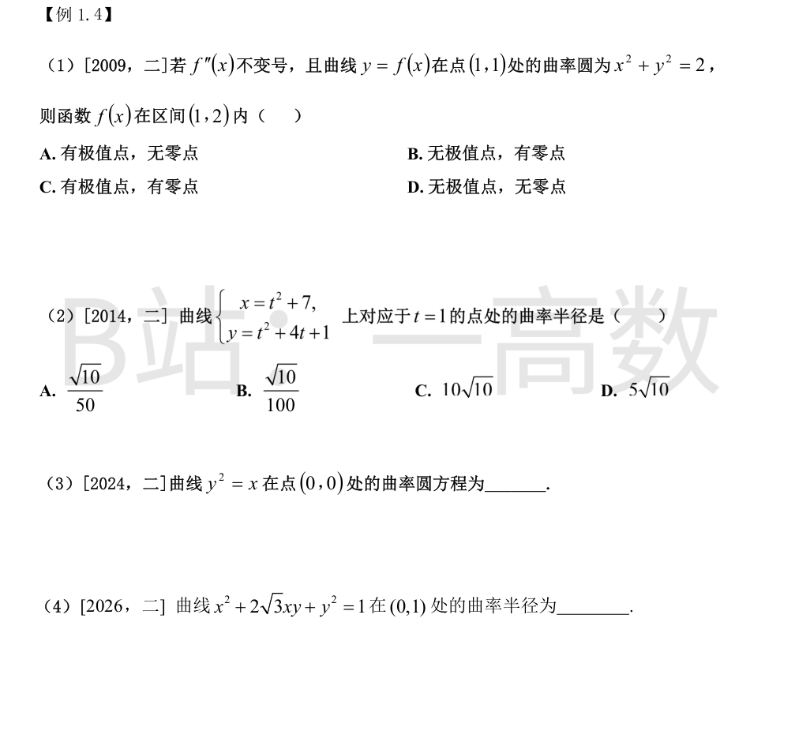
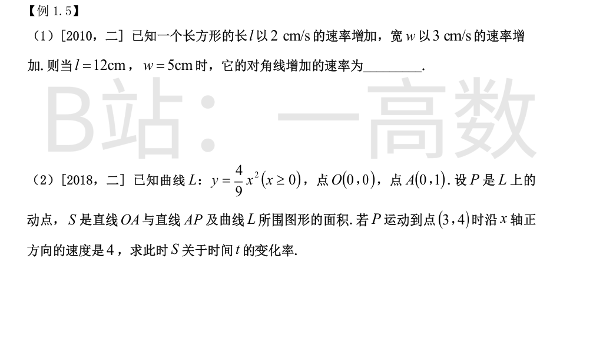
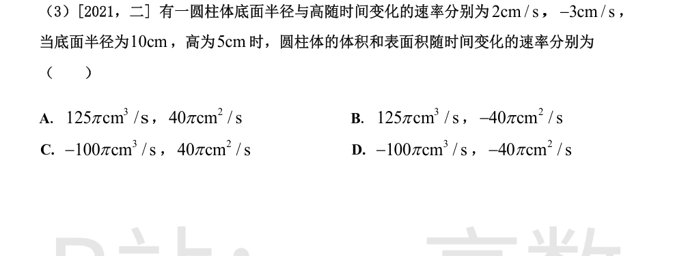
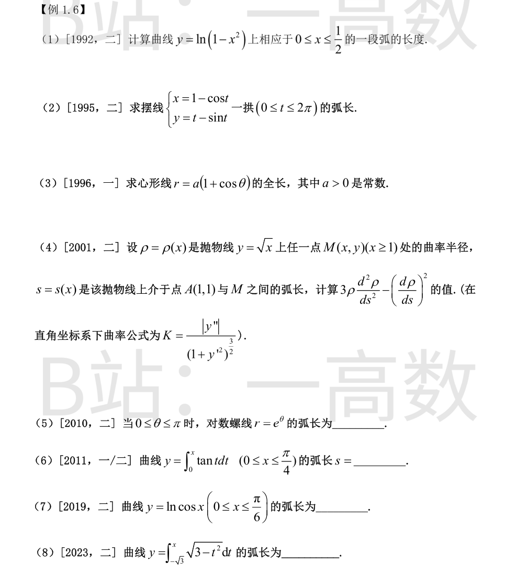
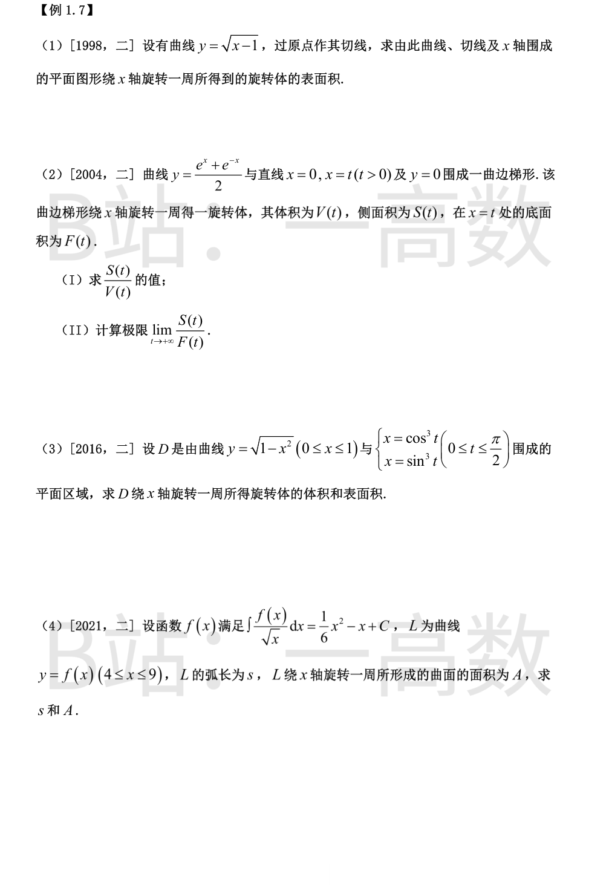
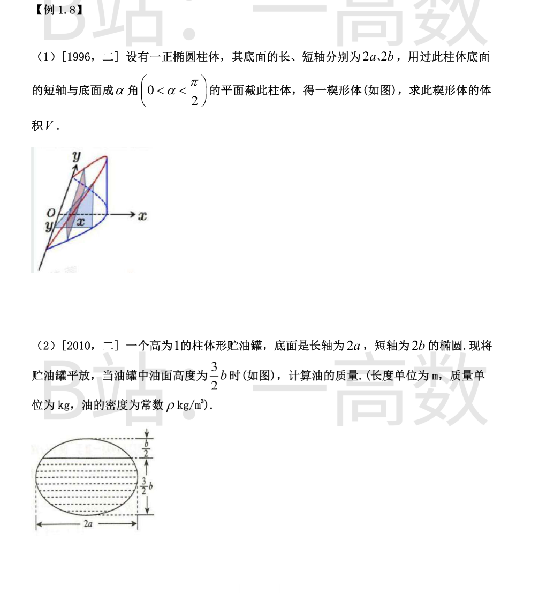

曲率圆与曲线在该点有相同的 y,y',y''。对圆 x^2+y^2=2：2x+2yy'=0，\left.y'\right|_{(1,1)}=-1；再求导 2+2(y'^2+yy'')=0，\left.y''\right|_{(1,1)}=-\frac{1+y'^2}{y}=-2。故 f(1)=1,\ f'(1)=-1,\ f''(1)=-2<0。
f'' 不变号，故 f''(x)<0，f' 严格递减：x\in(1,2) 时 f'(x)<-1<0，f 严格单调减，无极值点。
又 f(2)=f(1)+\int_1^2 f'\,\mathrm{d}x<1+\int_1^2(-1)\,\mathrm{d}x=0，而 f(1)=1>0，由零点定理 f 在 (1,2) 内有零点。选 (B)。
x'=2t,\ y'=2t+4,\ x''=2,\ y''=2；t=1 时 x'=2,\ y'=6。
$$K=\frac{|x'y''-x''y'|}{(x'^2+y'^2)^{3/2}}=\frac{|2\cdot2-2\cdot6|}{(4+36)^{3/2}}=\frac{8}{40\sqrt{40}}=\frac{8}{80\sqrt{10}}=\frac{\sqrt{10}}{100}.$$
曲率半径 \rho=\dfrac{1}{K}=10\sqrt{10}，选 (C)。
把曲线写作 x=y^2：\frac{\mathrm{d}x}{\mathrm{d}y}=2y,\ \frac{\mathrm{d}^2x}{\mathrm{d}y^2}=2；在 y=0 处 x'=0,\ x''=2。
$$K=\frac{|x''|}{(1+x'^2)^{3/2}}=2,\qquad \rho=\frac12.$$
抛物线 x=y^2 向 +x 方向凹，曲率中心位于凹侧法线上：中心 \left(0+\frac{1+0}{2},\ 0\right)=\left(\frac12,0\right)。
曲率圆：\left(x-\frac12\right)^2+y^2=\frac14。
y'=-\frac{x+\sqrt3 y}{\sqrt3 x+y}，在 (0,1)：y'=-\sqrt3。
记 N=x+\sqrt3 y,\ D=\sqrt3 x+y，则 y''=-\frac{N'D-ND'}{D^2}，其中 N'=1+\sqrt3 y'，D'=\sqrt3+y'。
在 (0,1)：N' = 1+\sqrt3(-\sqrt3) = -2,\ D' = \sqrt3-\sqrt3 = 0，故 y''=-\frac{(-2)(1)-0}{1}=2。
$$K=\frac{|y''|}{(1+y'^2)^{3/2}}=\frac{2}{(1+3)^{3/2}}=\frac{2}{8}=\frac14,\qquad \rho=4.$$


d=\sqrt{l^2+w^2}，求导：\frac{\mathrm{d}d}{\mathrm{d}t}=\frac{l\frac{\mathrm{d}l}{\mathrm{d}t}+w\frac{\mathrm{d}w}{\mathrm{d}t}}{\sqrt{l^2+w^2}}。
代入 l=12,\ w=5,\ \frac{\mathrm{d}l}{\mathrm{d}t}=2,\ \frac{\mathrm{d}w}{\mathrm{d}t}=3：\frac{\mathrm{d}d}{\mathrm{d}t}=\frac{12\cdot2+5\cdot3}{13}=\frac{39}{13}=3\ \text{cm/s}。
设 P=(x,\frac49x^2)，直线 AP：Y=1+\frac{y_P-1}{x_P}X。在 (0,x) 上直线在曲线上方：
$$S=\int_0^x\left[1+\frac{y-1}{x}t-\frac49t^2\right]\mathrm{d}t=x+\frac{x(y-1)}{2}-\frac{4x^3}{27}.$$
代入 y=\frac49x^2：S=\frac{x}{2}+\frac{2}{27}x^3（检验 P=(3,4)：S=\frac32+2=\frac72，与直接积分 \int_0^3(1+t-\frac49t^2)\mathrm{d}t=\frac72 一致）。
$$\frac{\mathrm{d}S}{\mathrm{d}x}=\frac12+\frac29x^2,\quad x=3:\ \frac{\mathrm{d}S}{\mathrm{d}x}=\frac52.$$
\frac{\mathrm{d}x}{\mathrm{d}t}=4，故 \frac{\mathrm{d}S}{\mathrm{d}t}=\frac52\cdot4=10。
V=\pi r^2h：\frac{\mathrm{d}V}{\mathrm{d}t}=\pi(2rr'h+r^2h')=\pi\left(2\cdot10\cdot2\cdot5+100\cdot(-3)\right)=\pi(200-300)=-100\pi\ \text{cm}^3/\text{s}。
表面积（含上下底）S=2\pi r^2+2\pi rh：
\frac{\mathrm{d}S}{\mathrm{d}t}=4\pi rr'+2\pi(r'h+rh')=80\pi+2\pi(2\cdot5+10\cdot(-3))=80\pi-40\pi=40\pi\ \text{cm}^2/\text{s}。选 (C)。

y'=-\frac{2x}{1-x^2}，1+y'^2=\frac{(1-x^2)^2+4x^2}{(1-x^2)^2}=\frac{(1+x^2)^2}{(1-x^2)^2}，故 \sqrt{1+y'^2}=\frac{1+x^2}{1-x^2}（0\le x\le\frac12）。
$$s=\int_0^{1/2}\frac{1+x^2}{1-x^2}\,\mathrm{d}x=\int_0^{1/2}\left(-1+\frac{2}{1-x^2}\right)\mathrm{d}x=\left[-x+\ln\frac{1+x}{1-x}\right]_0^{1/2}=\ln 3-\frac12.$$
x'=\sin t,\ y'=1-\cos t，
$$\sqrt{x'^2+y'^2}=\sqrt{\sin^2t+1-2\cos t+\cos^2t}=\sqrt{2-2\cos t}=2\left|\sin\frac{t}{2}\right|.$$
$$s=\int_0^{2\pi}2\sin\frac t2\,\mathrm{d}t=\left[-4\cos\frac t2\right]_0^{2\pi}=8.$$
r'=-a\sin t，r^2+r'^2=a^2[(1+\cos t)^2+\sin^2t]=2a^2(1+\cos t)=4a^2\cos^2\frac t2。
$$s=2\int_0^{\pi}\sqrt{r^2+r'^2}\,\mathrm{d}t=2\int_0^{\pi}2a\cos\frac t2\,\mathrm{d}t=4a\left[2\sin\frac t2\right]_0^{\pi}=8a.$$
y=x^{1/2},\ y'=\frac{1}{2\sqrt x},\ y''=-\frac{1}{4x^{3/2}}。
$$K=\frac{|y''|}{(1+y'^2)^{3/2}}=\frac{\frac{1}{4x^{3/2}}}{\left(\frac{4x+1}{4x}\right)^{3/2}}=\frac{2}{(4x+1)^{3/2}},\qquad \rho=\frac{(4x+1)^{3/2}}{2}.$$
\frac{\mathrm{d}s}{\mathrm{d}x}=\sqrt{1+y'^2}=\frac{\sqrt{4x+1}}{2\sqrt x}；\frac{\mathrm{d}\rho}{\mathrm{d}x}=3\sqrt{4x+1}，故
$$\frac{\mathrm{d}\rho}{\mathrm{d}s}=\frac{3\sqrt{4x+1}\cdot2\sqrt x}{\sqrt{4x+1}}=6\sqrt x,\qquad \frac{\mathrm{d}^2\rho}{\mathrm{d}s^2}=\frac{\mathrm{d}}{\mathrm{d}x}(6\sqrt x)\cdot\frac{\mathrm{d}x}{\mathrm{d}s}=\frac{3}{\sqrt x}\cdot\frac{2\sqrt x}{\sqrt{4x+1}}=\frac{6}{\sqrt{4x+1}}.$$
$$3\rho\frac{\mathrm{d}^2\rho}{\mathrm{d}s^2}-\left(\frac{\mathrm{d}\rho}{\mathrm{d}s}\right)^2=3\cdot\frac{(4x+1)^{3/2}}{2}\cdot\frac{6}{\sqrt{4x+1}}-36x=9(4x+1)-36x=9.$$
r'=e^\theta，\sqrt{r^2+r'^2}=\sqrt{2}\,e^\theta。
$$s=\int_0^{\pi}\sqrt2\,e^\theta\,\mathrm{d}\theta=\sqrt2\left(e^\pi-1\right).$$
y'=\tan x，\mathrm{d}s=\sqrt{1+\tan^2x}\,\mathrm{d}x=\sec x\,\mathrm{d}x。
$$s=\int_0^{\pi/4}\sec x\,\mathrm{d}x=\left[\ln|\sec x+\tan x|\right]_0^{\pi/4}=\ln(\sqrt2+1).$$
y'=-\tan x，\sqrt{1+y'^2}=\sec x。
$$s=\int_0^{\pi/6}\sec x\,\mathrm{d}x=\left[\ln(\sec x+\tan x)\right]_0^{\pi/6}=\ln\!\left(\frac{2}{\sqrt3}+\frac{1}{\sqrt3}\right)=\ln\sqrt3=\frac12\ln 3.$$
定义域 x\in[-\sqrt3,\sqrt3]；y'=\sqrt{3-x^2}，\sqrt{1+y'^2}=\sqrt{4-x^2}。
$$s=\int_{-\sqrt3}^{\sqrt3}\sqrt{4-x^2}\,\mathrm{d}x=2\int_0^{\sqrt3}\sqrt{4-x^2}\,\mathrm{d}x=2\left[\frac{x}{2}\sqrt{4-x^2}+2\arcsin\frac x2\right]_0^{\sqrt3}=\sqrt3+\frac{4\pi}{3}.$$

切线过原点：kx=\sqrt{x-1}\Rightarrow k^2x^2-x+1=0，相切要求判别式为 0：1=4k^2，k=\frac12，切点 (2,1)，切线 y=\frac x2。区域由切线段 (0\le x\le2)、曲线段 (1\le x\le2) 与 x 轴段 (0\le x\le1) 围成。
曲线段旋转面积：y'=\frac{1}{2\sqrt{x-1}}，\sqrt{1+y'^2}=\frac{\sqrt{4x-3}}{2\sqrt{x-1}}，
$$A_1=2\pi\int_1^2\sqrt{x-1}\cdot\frac{\sqrt{4x-3}}{2\sqrt{x-1}}\,\mathrm{d}x=\pi\int_1^2\sqrt{4x-3}\,\mathrm{d}x=\frac{\pi}{6}\left[(4x-3)^{3/2}\right]_1^2=\frac{\pi}{6}(5\sqrt5-1).$$
切线段：\mathrm{d}s=\sqrt{1+\frac14}\,\mathrm{d}x=\frac{\sqrt5}{2}\mathrm{d}x，
$$A_2=2\pi\int_0^2\frac x2\cdot\frac{\sqrt5}{2}\,\mathrm{d}x=2\pi\cdot\frac{\sqrt5}{4}\cdot2=\pi\sqrt5.$$
$$A=A_1+A_2=\frac{\pi}{6}(5\sqrt5-1)+\pi\sqrt5=\frac{\pi}{6}(11\sqrt5-1).$$
y'=\frac{e^x-e^{-x}}{2}，1+y'^2=\frac{(e^x+e^{-x})^2}{4}=y^2，故 \sqrt{1+y'^2}=y。于是
$$S(t)=2\pi\int_0^t y\sqrt{1+y'^2}\,\mathrm{d}x=2\pi\int_0^t y^2\,\mathrm{d}x=2V(t),$$
其中 V(t)=\pi\int_0^t y^2\,\mathrm{d}x=\frac{\pi}{8}\left(e^{2t}-e^{-2t}+4t\right)。故 \frac{S(t)}{V(t)}=2。
(II) F(t)=\pi y^2(t)=\frac{\pi}{4}(e^t+e^{-t})^2，
$$\frac{S(t)}{F(t)}=\frac{2V(t)}{F(t)}=\frac{e^{2t}-e^{-2t}+4t}{e^{2t}+e^{-2t}+2}=\frac{1-e^{-4t}+4te^{-2t}}{1+e^{-4t}+2e^{-2t}}\to1\ (t\to+\infty).$$
星形线满足 x^{2/3}+y^{2/3}=1，即 y_{星}^2=(1-x^{2/3})^3，在圆下方。
$$V=\pi\int_0^1\left[(1-x^2)-(1-x^{2/3})^3\right]\mathrm{d}x=\pi\int_0^1\left(3x^{2/3}-3x^{4/3}\right)\mathrm{d}x=\pi\left(\frac95-\frac97\right)=\frac{18\pi}{35}.$$
外表面积（圆弧）：y'=\frac{-x}{\sqrt{1-x^2}}，\sqrt{1+y'^2}=\frac{1}{\sqrt{1-x^2}}，
$$S_1=2\pi\int_0^1\sqrt{1-x^2}\cdot\frac{1}{\sqrt{1-x^2}}\,\mathrm{d}x=2\pi.$$
内表面积（星形线）：x'=-3\cos^2t\sin t,\ y'=3\sin^2t\cos t，\mathrm{d}s=3\sin t\cos t\,\mathrm{d}t，
$$S_2=2\pi\int_0^{\pi/2}\sin^3t\cdot3\sin t\cos t\,\mathrm{d}t=6\pi\int_0^{\pi/2}\sin^4t\,\mathrm{d}(\sin t)=\frac{6\pi}{5}.$$
$$S=S_1+S_2=2\pi+\frac{6\pi}{5}=\frac{16\pi}{5}.$$
由 \frac{f(x)}{\sqrt x}=\frac{x}{3}-1 得 f(x)=\frac{\sqrt x}{3}(x-3)=\frac{x^{3/2}}{3}-\sqrt x（在 [4,9] 上 f>0）。
y'=\frac{\sqrt x}{2}-\frac{1}{2\sqrt x}=\frac{x-1}{2\sqrt x}，1+y'^2=1+\frac{(x-1)^2}{4x}=\frac{(x+1)^2}{4x}，\sqrt{1+y'^2}=\frac{x+1}{2\sqrt x}。
$$s=\int_4^9\frac{x+1}{2\sqrt x}\,\mathrm{d}x=\frac12\int_4^9\left(\sqrt x+\frac{1}{\sqrt x}\right)\mathrm{d}x=\frac12\left[\frac23x^{3/2}+2\sqrt x\right]_4^9=\frac12\left(\frac{38}{3}+2\right)=\frac{22}{3}.$$
$$A=2\pi\int_4^9\left(\frac{\sqrt x}{3}(x-3)\right)\frac{x+1}{2\sqrt x}\,\mathrm{d}x=\pi\int_4^9\left(\frac{x^2}{3}-\frac{2x}{3}-1\right)\mathrm{d}x=\pi\left(\frac{665}{9}-\frac{195}{9}-\frac{45}{9}\right)=\frac{425\pi}{9}.$$

底面椭圆 \frac{x^2}{a^2}+\frac{y^2}{b^2}=1（x 轴为长轴），截平面过 y 轴（短轴）、与底面成 α 角，平面方程 z=x\tan\alpha。楔形体为柱体内 x\ge0 部分，截面高度 z=x\tan\alpha：
$$V=\iint_{x\ge0,\,\frac{x^2}{a^2}+\frac{y^2}{b^2}\le1}x\tan\alpha\,\mathrm{d}x\mathrm{d}y=\tan\alpha\int_{-b}^{b}\!\mathrm{d}y\int_0^{a\sqrt{1-y^2/b^2}}x\,\mathrm{d}x=\frac{a^2\tan\alpha}{2}\int_{-b}^{b}\left(1-\frac{y^2}{b^2}\right)\mathrm{d}y.$$
\int_{-b}^{b}(1-\frac{y^2}{b^2})\mathrm{d}y=\frac{4b}{3}，故 V=\dfrac{a^2\tan\alpha}{2}\cdot\dfrac{4b}{3}=\dfrac{2}{3}a^2b\tan\alpha。
截面椭圆 \frac{x^2}{a^2}+\frac{y^2}{b^2}=1（y 轴竖直，油占 y\in[-b,\frac b2]），罐长 1。
$$A=\int_{-b}^{b/2}2a\sqrt{1-\frac{y^2}{b^2}}\,\mathrm{d}y\ \xrightarrow{y=b\sin t}\ 2ab\int_{-\pi/2}^{\pi/6}\cos^2t\,\mathrm{d}t.$$
\int_{-\pi/2}^{\pi/6}\cos^2t\,\mathrm{d}t=\left[\frac t2+\frac{\sin2t}{4}\right]_{-\pi/2}^{\pi/6}=\frac{\pi}{12}+\frac{\sqrt3}{8}+\frac{\pi}{4}=\frac{\pi}{3}+\frac{\sqrt3}{8}。
故 A=2ab\left(\frac{\pi}{3}+\frac{\sqrt3}{8}\right)=\left(\frac{2\pi}{3}+\frac{\sqrt3}{4}\right)ab，质量
$$m=\rho\cdot A\cdot1=\left(\frac{2\pi}{3}+\frac{\sqrt3}{4}\right)ab\rho\ \text{kg}.$$